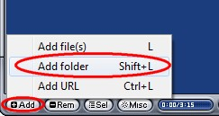
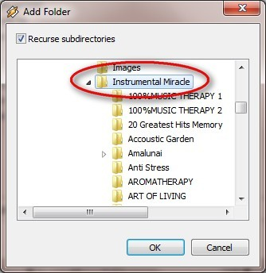
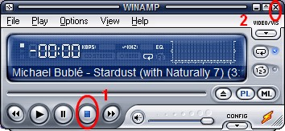

Panduan Penggunaan Winamp di Klinik
Panduan Penggunaan Winamp
Klik 2x icon Winamp
- Untuk menambahkan musik tekan tombol Add di pojok kiri bawah winamp, pilih Add Folder.

- Arahkan ke folder musik yang ingin ditambahkan. (Arahkan ke folder utama yang menyimpan semua folder musik yang diinginkan, sehingga semua musik yang diinginkan akan masuk ke playlist).
- 
- Klik OK.
Note:
Langkah no. 1 s/d 3 cukup dilakukan satu kali saja. Lakukan kembali no. 1 s/d 3 jika ada penambahan musik baru
- Play seperti biasa.
- Untuk menghentikan musik (ketika klinik hendak tutup dan akan me-shutdown komputer), SELALU klik Stop (1) dulu, kemudian baru Close (2).
Note:
Hal ini supaya keesokan hari ketika Winamp dijalankan, maka musik akan melanjutkan dari urutan terakhir, sehingga musik yang diputar tidak akan berulang-ulang.

- Keesokan hari untuk memutar music cukup lakukan mulai langkah no. 4.
Copyright © 2010, IT Department of Miracle Aesthetic Clinic Group
Created with the Freeware Edition of HelpNDoc: Easily create PDF Help documents